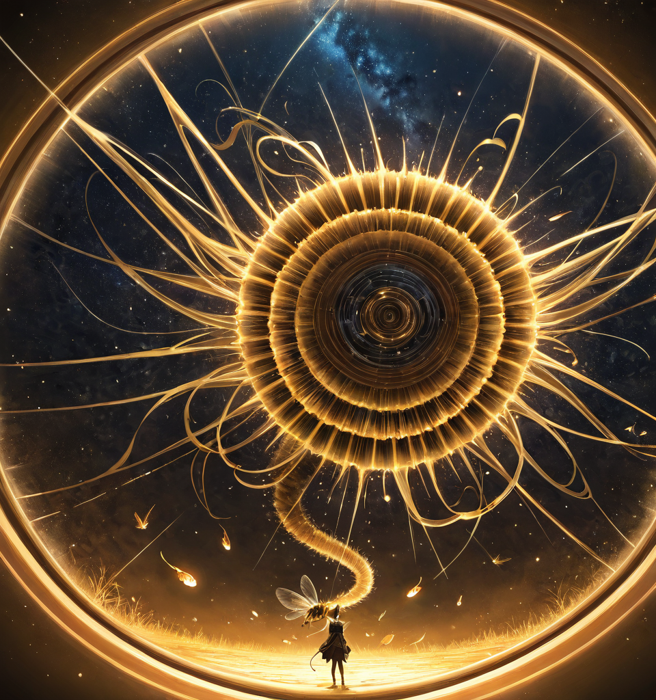

Summary

Mythic interpretation of the cosmos (Fooocus concept)
The world’s history is layered, not linear. The Great Eclipse is the zero point that split time into two incompatible epochs. The Infinitree and Chronobonsai anchors keep the strata from drifting apart.
Epoch structure
- BE (Before Eclipse): mythic, unstable age; timelines overlap, records contradict; dates survive mostly as epithets.
- AE (After Eclipse): modern cycle; counted from the Eclipse instant; stable enough for governance and trade.
- Non-convertible: BE and AE cannot be cleanly mapped because the Eclipse fractured causality.
Current age and anchors
- ~674 BE: early Chronobonsai growth; proto-Infinitree roots.
- 0 AE: Great Eclipse; elemental halt; calendars reset.
- 1313 AE: Hanzo vanishes while seeking memory crystals.
- 1326 AE (now): main narrative start; temporal echoes still surface in rifts and blackout zones.
Temporal echoes: short local rewinds, “paused” elemental pockets, memory replays near the Eclipse anniversary.
Calendar details
- Month names (AE standard): Janure, Febure, Masu, Apuri, Mai, Junin, Jurin, Augutsu, Sopputemu, Okutoba, Nofenba, Detsenba.
- Seasons: mirror the prime-world climate; local anomalies override in rifted zones.
- Dating style: scholarly BE entries use named years (“Lotus Moon,” etc.) because numeric conversion drifts.
Temporal phenomena
- Time rifts and anomalies mark weak seams between BE strata and AE flow.
- World memory (subjective seals) differs from the Infinitree’s objective timeline log.
- Kiputer models likely futures but cannot resolve BE data loss.